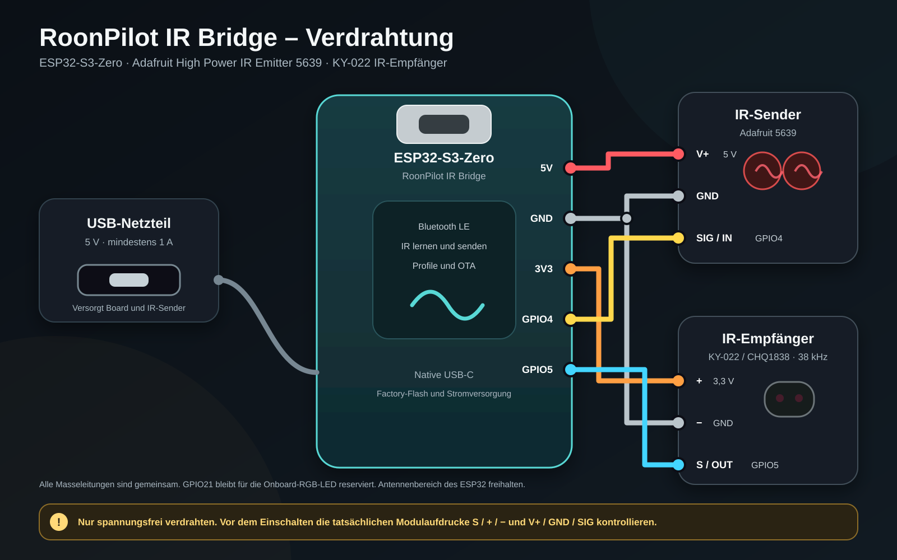

Einrichtung und Bedienung
Vollständige Bridge-Anleitung
Diese Anleitung beginnt beim unversorgten, nackten Board und führt bis zu gelernten IR-Profilen, zonenbezogenem Routing, Sicherung und signierten Onlineupdates durch RoonPilot.
1. Aufgabe der Bridge
RoonPilot IR Bridge ist eine optionale ESP32-S3-Erweiterung für Geräte, deren Lautstärke oder Stromzustand Roon nicht direkt steuern kann. RoonPilot bleibt die Bedienoberfläche; die Bridge empfängt authentifizierte Lautstärke-, Mute- und Power-Aktionen und sendet die gelernten Befehle der Original-Infrarotfernbedienung.
Der Steuerweg wird für jede Roon-Zone getrennt gewählt. Eine Zone kann die native Roon-Lautstärke nutzen, eine zweite einen DAC per Infrarot regeln und eine weitere die Lautstärkeregelung bewusst deaktivieren. Wird Bridge & Bluetooth abgeschaltet, bleiben nach dem RoonPilot-Neustart Bridge-Scanning, Bluetooth und sämtliche Bridge-Hintergrundaufgaben aus.
2. Hardware und sichere Verdrahtung
Der validierte Prototyp nutzt ein ESP32-S3-Zero-kompatibles Board mit 4 MB Flash und 2 MB PSRAM, einen AZ-Delivery-KY-022/CHQ1838-Empfänger und USB-Stromversorgung. Als finale Ausgangsstufe ist der Adafruit High Power IR Emitter 5639 vorgesehen; das kleine AZ-Delivery-KY-005-Sendemodul genügt für kurze Distanzen am Testplatz.
S, +, −, V+, GND und SIG auf den gelieferten Modulen ablesen. Kompatible KY-022-Boards besitzen nicht immer dieselbe physische Pinreihenfolge.
| Bridge-Anschluss | Ziel | Aufgabe |
|---|---|---|
| 5 V | Adafruit 5639 V+ | Versorgung des Hochleistungssenders direkt von USB, nicht vom 3,3-V-Regler |
| 3V3 | AZ-Prototyp-Sender VCC | Nur für das derzeitige kleine AZ-Sendemodul |
| GPIO4 | Sender SIG / S | 3,3-V-IR-Modulationssignal |
| 3V3 | KY-022 + | Hält dessen Digitalausgang im Eingangsbereich des ESP32 |
| GPIO5 | KY-022 S / OUT | Demoduliertes IR-Empfangssignal |
| GND | Beide Module | Zwingend gemeinsame Masse |
Das Adafruit-Board besitzt einen eigenen Transistortreiber und akzeptiert 3–5 V Versorgung sowie ein 3–5-V-Logiksignal. Bei 5 V können die beiden LEDs gepulst zusammen rund 400 mA aufnehmen. Deshalb ist ein stabiles USB-Netzteil mit 5 V / mindestens 1 A nötig; die LEDs dürfen niemals direkt an einem GPIO hängen. Nur kurze Fernbedienungsimpulse senden und den Keramikantennenbereich des ESP32 von Modulen, Kabeln und Metall freihalten.
3. Erste Factory-Installation
- Verdrahtung bei abgezogenem USB vollständig prüfen. Beim allerersten Boardtest die IR-Module abziehen, solange deren Pinbeschriftung nicht zweifelsfrei feststeht.
- Den Bridge-Webinstaller in einem aktuellen Desktop-Chrome oder Edge öffnen. Firefox, Safari, iPhone und iPad besitzen die erforderliche Web-Serial-Schnittstelle nicht.
- Das Bridge-Board direkt per USB anschließen. Arduino Serial Monitor, ESP-IDF Monitor und alle anderen Programme schließen, die den Port verwenden.
- Das native serielle USB/JTAG-Gerät des ESP32-S3 wählen. Unter macOS beginnt es üblicherweise mit
cu.usbmodem…; unter Windows erscheint meist USB JTAG/serial debug unit (COM…). - Beide Sicherheitsbestätigungen akzeptieren und den Installer starten. USB bis zum vollständigen Abschluss von Installation und Neustart verbunden lassen.
Nach erfolgreicher Factory-Installation erzeugt die Bridge eine neue zufällige Kennung im Format RPB-XXXX-XXX und erlaubt die erste verschlüsselte Kopplung. Während des offenen Pairings pulsiert die RGB-LED langsam blau.
4. Bridge mit RoonPilot koppeln
- Die lokale RoonPilot-Weboberfläche öffnen und Bridge auswählen.
- Bridge & Bluetooth aktivieren, speichern und RoonPilot neu starten lassen. Bei deaktivierter Funktion wird kein Bridge-Bluetooth-Stack gestartet.
- Scan for Bridges wählen und die angezeigte
RPB-…-Kennung mit der gewünschten Bridge vergleichen. - Diese Kennung auswählen und das Pairing in RoonPilot bestätigen. Kein unbekanntes Gerät in der Nähe koppeln.
- Auf Encrypted and bonded, die installierte Bridge-Version und Ready warten. Zwei kurze blaue LED-Signale bestätigen den Erfolg; danach geht die LED aus.
- Vor dem Lernen von Profilen Test connection ausführen.
Für das normale Pairing ist kein von außen erreichbarer BOOT-Taster nötig. Hat später nur eine Seite ihre Bond-Daten verloren, die Bridge innerhalb von 15 Sekunden dreimal aus- und einschalten. Sie löscht dabei nur den Bond und öffnet das Pairing für fünf Minuten; Kennung und IR-Profile bleiben erhalten.
5. Optionaler WLAN-Fallback
BLE bleibt die bevorzugte Verbindung. Soll die Bridge in einem anderen Zimmer stehen, bei verbundener und gebondeter BLE-Bridge Allow Wi-Fi fallback aktivieren. RoonPilot überträgt dann einmalig seine aktuellen 2,4-GHz-Zugangsdaten und einen neuen 256-Bit-Anwendungsschlüssel durch die verschlüsselte BLE-Verbindung.
- Schalter aktivieren und Provisionierung bestätigen.
- Auf Connected and verified, Bridge-IP und Signalstärke warten.
- Mit Test Wi-Fi path einen authentifizierten WLAN-Befehl erzwingen, obwohl BLE verfügbar ist.
Die Befehle nutzen AES-256-GCM-Authentifizierung und Wiederholungsschutz. Ein Retry darf nicht unbemerkt einen zweiten IR-Befehl auslösen. Fehlerhafte Zugangsdaten werden nicht behalten, BLE bleibt der Rettungsweg und bei ausgeschaltetem Fallback startet das WLAN-Funkteil der Bridge nach einem Neustart nicht. RoonPilot und Bridge müssen ohne Client-/AP-Isolation im selben lokalen Netz liegen.
6. IR-Profil erstellen und lernen
- Ein eindeutig benanntes Profil wie
RME ADI-2 DAC — Wohnzimmeranlegen. Üblicherweise 38 kHz Träger und 33 % Duty beibehalten, sofern das Gerät nichts anderes benötigt. - Neben Volume up auf Learn drücken. Während des Wartens pulsiert die Bridge-LED orange.
- Originalfernbedienung auf den KY-022 richten und die angeforderte Taste einmal kurz und sauber drücken.
- Bei Aufforderung denselben Druck wiederholen. Nur übereinstimmende Aufnahmen werden akzeptiert.
- Zwei kurze grüne Signale bedeuten Analyse und Speicherung; zwei rote Signale bedeuten Timeout, Abweichung oder Fehler.
- Mit Test das echte Gerät prüfen und erst danach Volume down, Mute, Power on und Power off lernen.
Bekannte NEC- und Extended-NEC-Signale behalten Protokoll- und Repeat-Informationen; Unbekanntes bleibt als verlustfreies Roh-Timing nutzbar. Duty ist der aktive Anteil jedes Trägerzyklus – weder Tastendauer noch Wiederholungszahl. Beim Standardwert 33 % ist die LED eines 38-kHz-Trägers etwa 8,7 µs von jeweils 26,3 µs eingeschaltet.
7. Jede Zone zuordnen
In Zone Management für jede sichtbare Zone einen Lautstärkeweg auswählen:
- Roon / endpoint volume sendet die native absolute oder dB-Lautstärke des Endpunkts.
- External IR Bridge sendet Volume up/down des ausgewählten Profils.
- Disabled verwirft Lautstärkeaktionen bewusst.
Die Encoder-Schrittzahl wird pro Zone getrennt eingestellt. 2 Steps bedeutet zwei vollständige gelernte IR-Tastendrücke pro RoonPilot-Rastung, nicht einen künstlich gehaltenen Befehl. Beim validierten RME-Profil ergeben zwei physische 0,5-dB-Schritte daher exakt eine 1,0-dB-RoonPilot-Rastung.
Mute und Power lassen sich ebenfalls pro Zone aktivieren. Play/Pause, Previous und Next bleiben native Roon-Aktionen. Da eine inkrementelle IR-Steuerung keinen absoluten Wert zurückmeldet, zeigt das Display einen relativen + / −-Aktionszähler und erfindet keinen Lautstärkewert.
Der Musiktransport läuft weiterhin über Roon und WiiM. Nur Lautstärke, Mute und Power gehen an die Bridge. Damit führt der RME selbst die Hardware-Lautstärkeänderung aus, seine Auto-Ref-Level-Funktion bleibt erhalten und die digitale Roon-Absenkung ersetzt nicht die RME-Regelung.
8. Profile sichern und wiederherstellen
Nach jeder erfolgreich geprüften Lernrunde Download JSON backup verwenden. Die Datei enthält Profilnamen, Träger- und Duty-Werte, Revisionen, gelernte Pulsfolgen mit Prüfsummen, Zonenzuordnungen, zonenbezogene Schrittzahlen und aktivierte Mute-/Power-Bedienelemente.
WLAN-Zugangsdaten, WLAN-Transportschlüssel, BLE-Bond-Schlüssel und alle anderen Geheimnisse sind ausdrücklich ausgeschlossen. Nach Factory-Reset oder Boardtausch zuerst koppeln, dann das Backup importieren und jede wiederhergestellte Aktion testen. Der WLAN-Fallback wird erneut eingerichtet, damit ein neuer Anwendungsschlüssel an genau diese Bridge gebunden wird.
9. Signierte Onlineupdates
Nach der ersten Factory-Installation werden normale Bridge-Updates unter Bridge → Bridge firmware update von RoonPilot verwaltet. USB-Zugang und lokale BIN-Auswahl sind im Normalfall nicht mehr nötig.
- Bei aktivierter Bridge darf RoonPilot das HTTPS-Manifest nach dem Start und danach höchstens alle 24 Stunden prüfen. Updateprüfung und die tägliche Gerätemeldung sind getrennte Einstellungen.
- Installierte und verfügbare Bridge-Version werden auf der Seite angezeigt. Ein auffälliger Hinweis in der Statuszeile führt direkt zur Updatekarte; die quittierbare Gerätemeldung wartet das Ende wichtiger Bedienvorgänge ab.
- Die Installation startet niemals automatisch. Download and install muss ausdrücklich gewählt und bestätigt werden.
- RoonPilot prüft Kanal, Projekt, Board, Protokollbereich, erforderliche Controller-Version, Größe, SHA-256, ESP32-S3-Ziel und eingebettete Version vor der Übertragung.
- Das Image wird über den aktuell verfügbaren verschlüsselten Transport gesendet. Die Bridge prüft Reihenfolge, Größe, SHA-256 und RSA-3072-Signatur unabhängig, bevor sie die inaktive A/B-Partition aktiviert.
- Erfolg erscheint erst nach der Wiederverbindung mit exakt der angeforderten Version. ESP-IDF-Rollback bleibt verfügbar, falls die neue Anwendung ihren Start nicht bestätigen kann.
Ist Bridge & Bluetooth deaktiviert, erfolgen weder Bridge-Scan noch Updateanfrage, Webhinweis oder Displaymeldung. Der normale RoonPilot-Updatekanal bleibt davon unabhängig.
10. Fehlerbehebung
Kein serielles Gerät im Installer
Datenfähiges Kabel verwenden, serielle Monitore schließen, ohne Hub verbinden, dann BOOT beim Einstecken halten und nach Erscheinen des Ports loslassen.
Bridge wird nicht gefunden
Bridge & Bluetooth muss aktiviert und gespeichert sein. Bei früher gekoppelter Bridge die Dreifach-Strom-Recovery nutzen und im fünfminütigen blauen Pairingfenster scannen.
Lernen läuft in einen Timeout
KY-022-Pinbeschriftung prüfen, mit 3,3 V versorgen, Sonnenlicht reduzieren, Originalfernbedienung näher halten und zweimal gleich kurz drücken.
Falscher Lautstärkeschritt
Zuerst genau einen gelernten Befehl mit Test prüfen. Danach die zoneneigene Schrittzahl kontrollieren; eine schlechte Aufnahme nicht durch eine größere Zahl kaschieren.
WLAN-Fallback verbindet nicht
Während gebondetem BLE provisionieren, 2,4 GHz verwenden, beide Geräte ins gleiche LAN bringen und AP-/Client-Isolation abschalten. Nach einem fehlgeschlagenen Ersttest muss BLE weiter erreichbar bleiben.
Kein Update angeboten
Bridge-Funktion und Bridge-Updateprüfung aktivieren, danach die manuelle Prüfung der Updatekarte nutzen. Ein älterer unsignierter Teststand kann zunächst eine kabelgebundene Migration benötigen.
Bereit für den Testplatz